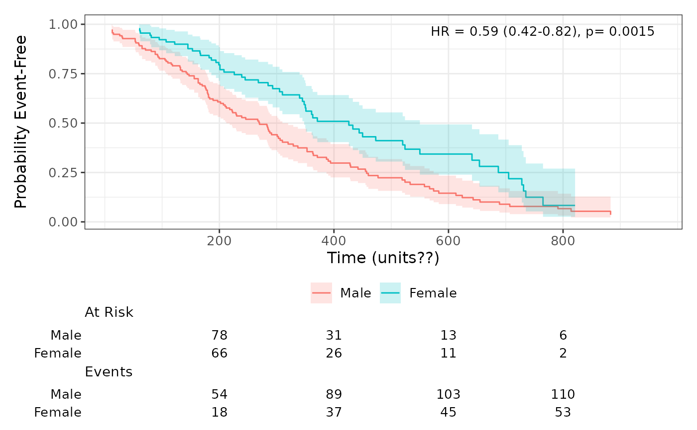
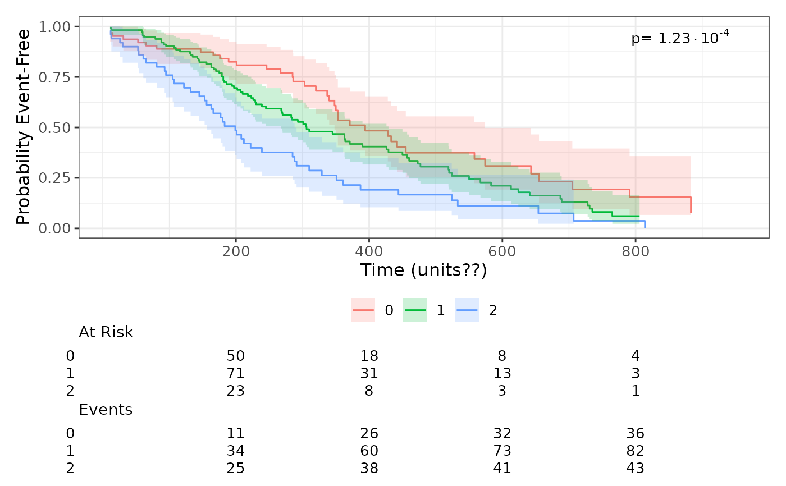
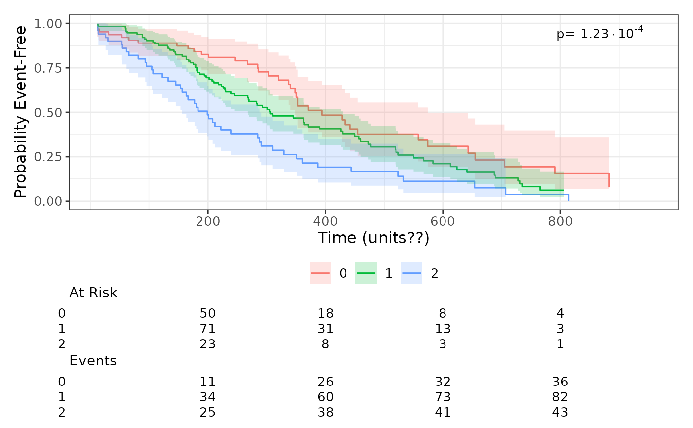

Kaplan–Meier plot from a Surv object
plot_survival_curves.RdPlot a Kaplan–Meier curve (with confidence intervals and risk table) using a supplied
Surv object. If the grouping variable has exactly two levels the function fits
a Cox model and annotates hazard ratio (95% CI) and p-value; if more than two groups
it displays only the log‑rank p-value.
Usage
plot_survival_curves(
surv_obj,
data,
group_var = "met_exercise_guidelines",
time_limits = NULL,
x_breaks = NULL,
annotate_y = 0.99,
annotate_x = NULL,
x_label = "Time (units??)",
y_label = NULL,
title = NULL,
custom_hr_pvalue_text = NULL,
type = c("survival", "risk")
)Arguments
- surv_obj
A
Survobject (can be right‑censored or left‑truncated).- data
A data frame containing the variables referenced by
surv_objandgroup_var.- group_var
Character, name of the grouping column in
data.- time_limits
Numeric(2), x-axis limits for the plot (default c(50, 100)).
- x_breaks
Numeric, breaks for the x axis.
- annotate_y
Numeric, y position for the annotation text (default 0.99).
- annotate_x
Numeric or NULL, x position for annotation; if NULL uses rightmost
time_limits.- x_label
Character, label for the x axis (default \"Time\").
- y_label
Character, label for the y axis (default \"Probability Event-free\").
- title
Character or NULL, plot title (default NULL).
- custom_hr_pvalue_text
Character or NULL; if provided, this string will be used for the annotation instead of the automatically computed HR/p-value (for two groups) or log‑rank p-value (for >2 groups).
- type
Character, one of "survival" or "risk"; passed to ggsurvfit(). If "survival" the default y_label is "Probability Event-Free"; if "risk" the default y_label is "Probability of Event".
Examples
data(cancer, package = "survival")
# Example with two groups
lung$sex <- factor(lung$sex, labels = c("Male", "Female"))
surv_obj <- with(lung, survival::Surv(time, status == 2))
plot_survival_curves(surv_obj, lung, group_var = "sex")

# Example with more than two groups
lung$ph.ecog[lung$ph.ecog == 3] <- NA
lung$ph.ecog <- factor(lung$ph.ecog)
surv_obj <- with(lung, survival::Surv(time, status == 2))
plot_survival_curves(surv_obj, lung, group_var = "ph.ecog")
 # Cumulative incidence plot
plot_survival_curves(surv_obj, lung, group_var = "ph.ecog")

# Cumulative incidence plot
plot_survival_curves(surv_obj, lung, group_var = "ph.ecog")
